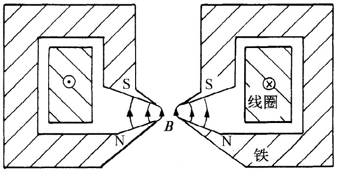
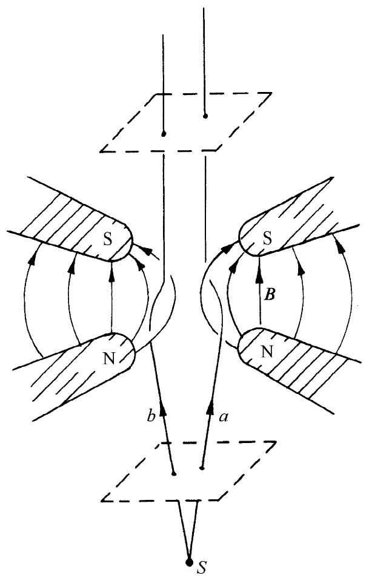

另一种透镜——常出现在电子显微镜中——就是简略如图29-6所示的磁透镜。一个柱形对称的电磁铁具有十分尖锐的圆形尖极，因而能在一小区域里产生一个非均匀的强磁场。一些沿垂直方向运动的电子在通过这一区域时给聚焦了。你能够通过考察如图29-7所示的极尖区域的放大图像而理解其机制，考虑相对于轴线以某一角度离开了源S的a和b两个电子。当电子a到达场的开始部分时，它被场的水平分量所偏转以致离开了你 。但这时电子将有一横向速度，使得当它经过强的垂直方向场时会得到一个指向轴心的冲力。它的横向运动当离开场时便给该磁力所消除，因而净效应就是一个朝向轴心的脉动加上一个环绕轴线的“旋转”。作用于粒子b上的所有力都与此相反，因而它也被朝向轴心偏转。在这图中，那些发散出去的电子都被引入平行路径。这作用就像置一物体于透镜的焦点上一样。安置在上部的另一个相似透镜则可用来把这些电子再聚焦回到一个单独的点上去，造成源S的像。
|  |  |
| 图29-6 磁透镜 | 图29-7 在磁透镜中电子的运动 |